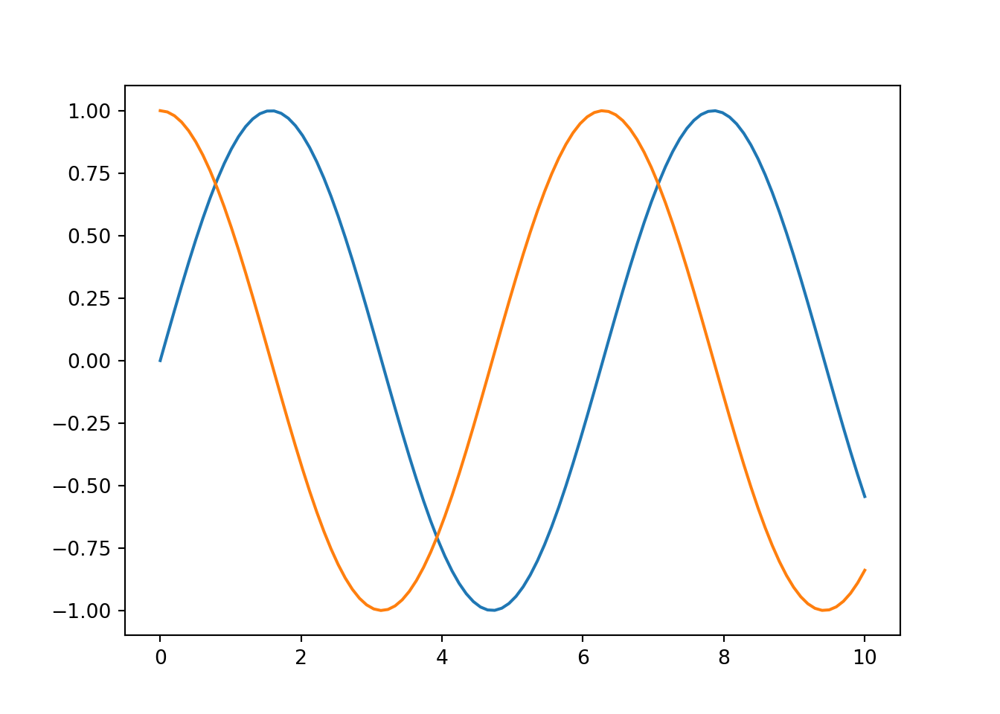

We continue our journey with Python. At the end of this week, you will be able to:
Practice using statsmodels library for statistical analysis
Exercise using Scikit-learn library for machine learning
Create plots using Matplotlib
Statistical Models in Python
statsmodels is a Python package that provides functions for fitting statistical models, conducting statistical tests, and statistical data exploration.
Let’s read a data set from the list provided in this link. We use the mtcars data set in R package datasets.
import statsmodels.api as stat # allow to access easily to most of the functionsimport statsmodels.formula.api as statf # allow to use formula style to fit the modelsimport pandas as pdimport numpy as npimport matplotlib.pyplot as pltdf = stat.datasets.get_rdataset("mtcars", "datasets").data # load data "mtcars" from the R package 'datasets'print(df.info())
The scikit-learn provides function that support machine learning techniques and practices including model fitting, predicting, cross-validation, etc. It also provides various supervised and unsupervised methods. The website of the package is https://scikit-learn.org
Linear models
Fitting regression models is relevant when the target value or response variable is assumed to be a linear combinations of some predictors. The following code will allow you to fit various linear models using sklearn module.
from sklearn import linear_modelfrom sklearn.model_selection import train_test_splitfrom sklearn.metrics import mean_absolute_percentage_errordf = stat.datasets.get_rdataset("mtcars", "datasets").data # load data "mtcars" from the R package 'datasets'# split datatraining_data, testing_data = train_test_split(df, test_size=0.2, random_state=25)# Create X and Y from trainingY = training_data["mpg"] # response variable / outcomeX = training_data.drop(columns=["mpg"]) #predictors / featuresreg = linear_model.LinearRegression().fit(X,Y)# Create X and Y from testingY_test = testing_data["mpg"] # response variable / outcomeX_test = testing_data.drop(columns=["mpg"]) #predictors / featuresmpg_y_pred = reg.predict(X_test) # predictionsprint(reg.coef_)
The matplotlib.pyplot module is a collection of command style functions that make matplotlib work like MATLAB.
A few plots!
import matplotlib.pyplot as pltimport numpy as npimport matplotlibmatplotlib.use('Agg') # To plot with Markdownx = np.linspace(0, 10, 100)plt.figure();plt.plot(x, np.sin(x))plt.plot(x, np.cos(x))plt.show()

plt.close()
Read data from sklearn and vizualize
import matplotlib.pyplot as pltimport pandas as pdfrom sklearn.datasets import load_iris import matplotlibmatplotlib.use('Agg') # To plot with Markdowniris = load_iris()df_iris = pd.DataFrame(iris.data)df_iris.columns = iris.feature_names# Boxplotplt.figure();plt.boxplot(df_iris)
{'whiskers': [<matplotlib.lines.Line2D object at 0x123089cd0>, <matplotlib.lines.Line2D object at 0x123089f70>, <matplotlib.lines.Line2D object at 0x12309afa0>, <matplotlib.lines.Line2D object at 0x1230ab280>, <matplotlib.lines.Line2D object at 0x1230b7280>, <matplotlib.lines.Line2D object at 0x1230b7520>, <matplotlib.lines.Line2D object at 0x1230c4520>, <matplotlib.lines.Line2D object at 0x1230c47c0>], 'caps': [<matplotlib.lines.Line2D object at 0x12309a250>, <matplotlib.lines.Line2D object at 0x12309a4f0>, <matplotlib.lines.Line2D object at 0x1230ab520>, <matplotlib.lines.Line2D object at 0x1230ab7c0>, <matplotlib.lines.Line2D object at 0x1230b77c0>, <matplotlib.lines.Line2D object at 0x1230b7a60>, <matplotlib.lines.Line2D object at 0x1230c4a60>, <matplotlib.lines.Line2D object at 0x1230c4d00>], 'boxes': [<matplotlib.lines.Line2D object at 0x123089a30>, <matplotlib.lines.Line2D object at 0x12309ad00>, <matplotlib.lines.Line2D object at 0x1230abfa0>, <matplotlib.lines.Line2D object at 0x1230c4280>], 'medians': [<matplotlib.lines.Line2D object at 0x12309a790>, <matplotlib.lines.Line2D object at 0x1230aba60>, <matplotlib.lines.Line2D object at 0x1230b7d00>, <matplotlib.lines.Line2D object at 0x1230c4fa0>], 'fliers': [<matplotlib.lines.Line2D object at 0x12309aa30>, <matplotlib.lines.Line2D object at 0x1230abd00>, <matplotlib.lines.Line2D object at 0x1230b7fa0>, <matplotlib.lines.Line2D object at 0x1230d2280>], 'means': []}
plt.xticks([1, 2, 3, 4], iris.feature_names)
([<matplotlib.axis.XTick object at 0x12304d430>, <matplotlib.axis.XTick object at 0x12304dc10>, <matplotlib.axis.XTick object at 0x123089700>, <matplotlib.axis.XTick object at 0x1230da070>], [Text(1, 0, 'sepal length (cm)'), Text(2, 0, 'sepal width (cm)'), Text(3, 0, 'petal length (cm)'), Text(4, 0, 'petal width (cm)')])